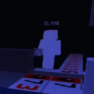
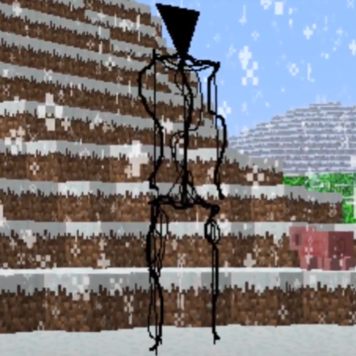
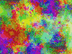

The bottom of the void (abbreviato TBoTV) é l'ARG (alternate reality game) preferito di Adam,
Suddiviso in 2 atti TBoTV Racconta l'avventura di alcuni giocatori di minecraft attraverso versioni modificate, con nemici e alleati tutto con un pizzico di horror e tantissima lore
Il primo atto segue un giocatore di nome Mark101, che terorizzato dalla luna corotta e dalle entità del void un giorno finisce in una base degli sviluppatori dove deve combattere il piano di ✺ e author di spargere l'infezione
L'immagine sotto é un entità del void di nome "integrity"

------------------------
Playlist del Act 1Il secondo atto segue invece Nguyen che giocando DeltaQuest non segue il copione di author, continuando a improvvisare costringe author a eliminarlo, resettarlo e modificarlo numerevoli volte portandolo al organizzare una rivolta con uno scambio degli eventi alla fine mozza fiato

------------------------
Playlist del Act 2L'ARG Include anche un canale dell' OST (original sound track) con tutte le musiche usate nei video
TBoTV OST PlaylistQuesto ARG é decisamente lungo, ma nonostante ciò sono riuscito a vederlo tutto, inoltre
Adam ha anche contatto diretto con Mark101 da Discord, e ogni tanto gli chiede delle textures per le sue mods
- Il team di SkyBase, ADMINSPACE, MB delta e DeltaQuest
- Adam (⑇)